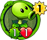
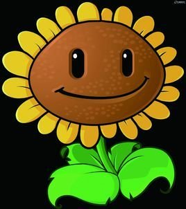
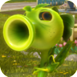

植物大战僵尸2版本
在植物大战僵尸2中，豌豆射手仍旧是玩家拥有的第一种植物，仍然是在开始冒险时已经归玩家所有。 他是在通过玩家的房子-第4天获得卷心菜投手前惟一的攻击植物。
花园战争系列
在花园战争系列射击游戏中，豌豆射手担当着重要角色。他擅长突击或打带跑的战术，可以用主武器豌豆炮造成大量溅射伤害。 像花园战争中的其他可选角色一样，有许多基于豌豆射手的变种，每种都有自己的特征。

和睦小镇保卫战
在和睦小镇保卫战中，豌豆射手再次出场，他善于多功能作战以及造成爆炸伤害。 与花园战争系列不同，豌豆射手不再有变种，但他拥有多种天赋，有些天赋可以改变他主武器或技能的效果
植物大战僵尸：英雄
植物大战僵尸：英雄中的豌豆射手绿影侠
在植物大战僵尸：英雄中，豌豆射手作为猛长属性的豌豆植物出场。
另外还有一位基于豌豆射手的英雄——绿影侠。

花絮
在所有植物中，豌豆射手最常在小游戏中出现。
豌豆射手与火爆辣椒出现在了模仿者的图鉴记录中。
有些豌豆射手的分解素材是多种植物共同使用的，比如他的头、茎、底部叶子。